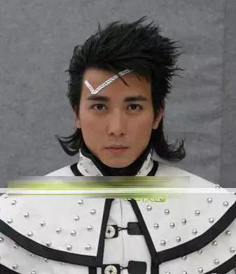
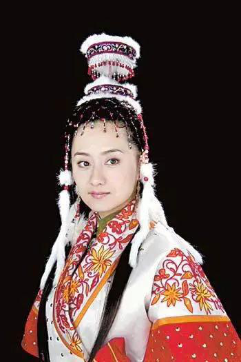
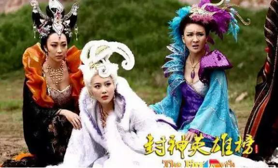

也许是最近几年国产雷剧看多了，现在觉得小时候看的《少年包青天》、《春光灿烂猪八戒》、《武林外史》等都倍儿好看！但是，总有那么几部神一样的存在的剧，小时候看的津津有味，但在现在看来造型real雷人啊！
《欢天喜地七仙女》可能是当时看的超认真，所以就没在意造型！现在一看，森森的觉得当时能完整看到结局真是不可思议！
只听说过孔雀吃了佛祖后，佛祖破其左肋而出。后尊其为母，号孔雀大明王。没听说过王母也是孔雀 。
这哪是七仙女啊，明明是七仙女战士……

不要以为鸡冠花只有红颜色
娘啊，这就是传说中的南天门，站着来玩儿COSPLAY的神！？

华妃娘娘搭上网球王子了....

扫即是发，发即是扫！
《风云雄霸天下》何润东的造型妥妥的新版《超人归来》！
还有这个脑袋上插筷子的孔慈，泡面+筷子跟步惊云简直是绝配啊！
《秦王李世民》的何润东。 呀，这个造型酷毙了!新版圣斗士超人!
《风云2》中黄奕小姐的乞丐发型，此中风情，非一般人可领悟！
《水月洞天》整体造型都很雷，只有这个古装版婚纱照惊艳到我了，很适合婚庆公司借鉴阿！
朱孝天版楚留香，感觉给他个烤箱可以直接开个烧烤大排档了！
《精卫填海》后羿这发型可烫得~~~花了不少银子吧！

为了表现李元霸的活泼也不用像白雪公主一样弄个灯笼袖吧？
最新版建宁公主我似乎看见《星球大战》里面的阿米达拉女王陛下了。
米老鼠真人版？曹颖的表情配合的也非常好！
这个可以直接去给奔驰代言了......
就算是西门吹雪，也用不着把自己的名字写在衣服上吧！
这大概是NIKE最新代言人
咱们的抗非典战真是好样的！

总觉得像窗帘....还有点像冰淇淋蛋卷
《福星高照猪八戒》中牛魔王这个造型，去掉俩牛角我还以为是印度人！
看看人家的裙子多漂亮，而且还是粉红色咧，新潮啊！
这个造型师一定是个吃货，不然谁会把四层蛋糕扣脑袋上！
虽然内衣外穿渐成时尚，但在《四大名捕》剧中范爷的扮相却令人叹惜啊，难道公主形象就是要把蕾丝绑到头上吗，怎么看都让人误解。。。
wuli心机boy的这个造型难道就是传说中的兵马俑真人版？
头顶一个鸟窝，身披一条麻袋
铁面的诱惑~
这个太震撼了！强迫症表示担心他头上的东西会随时掉下来。
真心觉得孙兴的造型师是最狠的！
要说早前的剧造型什么的不考究也是可以理解的，毕竟条件神马的不比现在。但是最近的《封神英雄榜》，张馨予扮演的狐仙儿在内的几只妖精，脑袋上都带着姹紫嫣红巨大动物logo，也是亮瞎人眼！
钟汉良版《天龙八部》，也遭到网友对人物造型的集体吐槽。其中对木婉清一角的造型最为突出，调侃称木婉清蒙着黑色蕾丝内裤上场。
来源：今日头条环球侃客